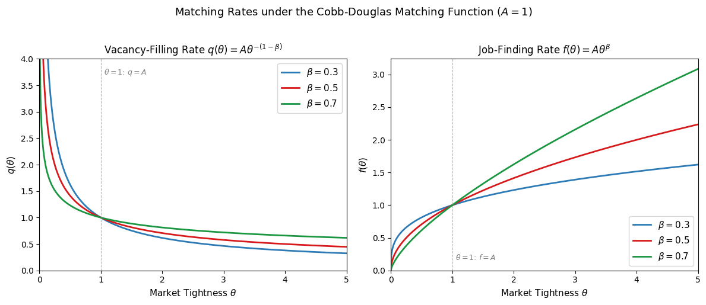
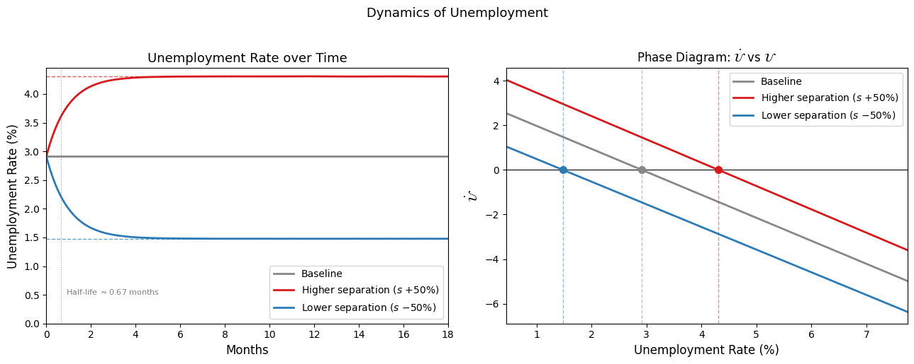
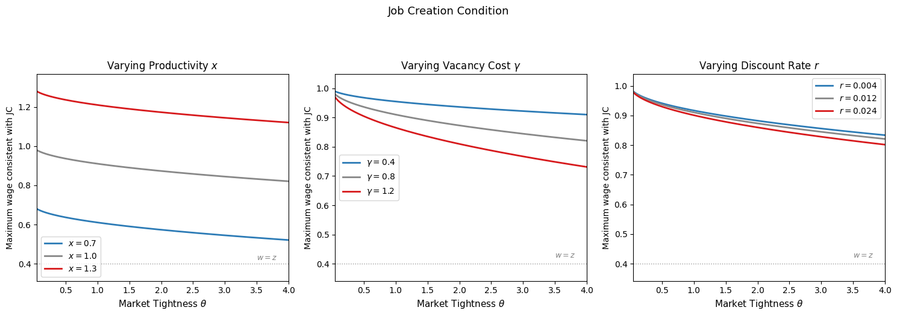
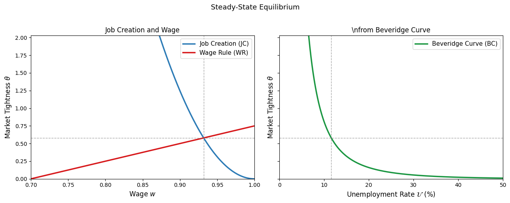
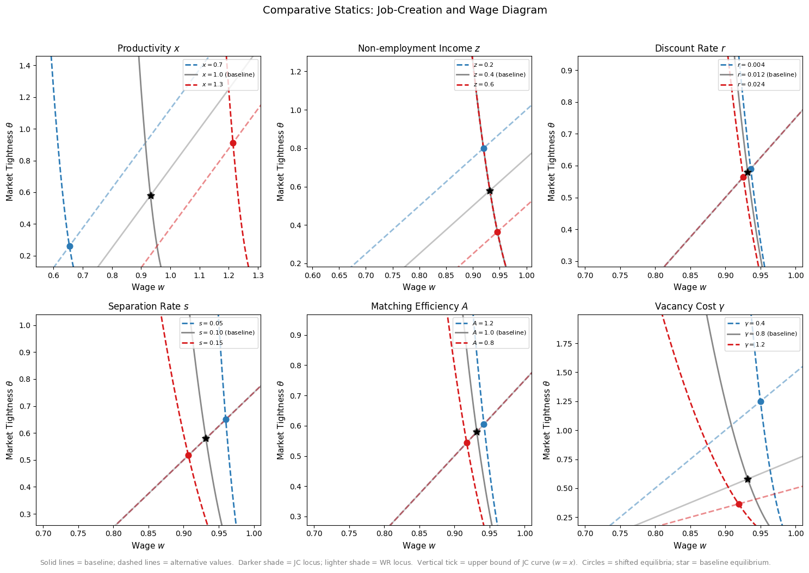

Equilibrium Unemployment#
Introduction#
The labor market is among the most studied institutions in economics, yet some of its most basic features resist explanation by the standard competitive model. In a frictionless Walrasian market, prices adjust instantaneously to equate supply and demand, leaving no room for unemployment as an equilibrium phenomenon — anyone willing to work at the prevailing wage finds a job immediately, and any firm willing to pay that wage finds a worker. Yet unemployment is persistent, pervasive, and highly variable over the business cycle. Job vacancies coexist with unemployment even in tight labor markets. Workers and firms spend substantial time and resources searching for one another. And wages appear to be determined by something more complex than a Walrasian auctioneer.
These facts call for a richer framework. This lecture develops the search and matching model of the labor market, the dominant paradigm in modern labor economics and macroeconomics for studying unemployment, wage determination, and labor market dynamics. The framework was developed primarily by Diamond, Mortensen, and Pissarides — awarded the Nobel Prize in 2010 — and it remains the workhorse model for both theoretical and empirical work on labor markets.
The model is organized around three central questions:
How are aggregate labor market outcomes — unemployment, job vacancies, and employment — determined as equilibrium phenomena?
How are wages determined?
What role does the labor market play in explaining business cycles and growth?
Departures from the Neoclassical Paradigm#
To address these questions, the search and matching framework departs from the neoclassical model in several ways.
Trading frictions. In reality, matching a worker to a job is a costly, time-consuming process. Workers must search for openings, apply, and interview; firms must advertise, screen applicants, and train new hires. These activities consume real resources and take time, meaning that the labor market does not clear instantaneously. Frictions arise from heterogeneity — workers differ in skills, preferences, and location; jobs differ in requirements, compensation, and location — as well as from informational imperfections - workers do not know which firms have suitable vacancies, and firms do not know which workers have suitable skills.
Flow dynamics. Rather than thinking of the labor market as a static equilibrium, the search and matching framework emphasizes the continuous flows between labor market states. At any moment, some workers are losing jobs and entering unemployment; others are finding jobs and leaving unemployment. Unemployment in steady state is not the absence of matching activity but the outcome of a balance between these flows — a point that has profound implications for how we think about policy and business cycles.
Unemployment as an equilibrium outcome. In the search and matching model, unemployment is not a disequilibrium phenomenon to be explained away, but a feature of the equilibrium itself. The time required to match workers and firms means that some workers are always between jobs, and some jobs always go unfilled. The model predicts not just the existence of unemployment but its level, its comovement with vacancies over the cycle, and its response to shocks and policy interventions.
Bargained wages. The neoclassical model treats wages as prices determined by competitive market forces. In the search and matching model, a match between a specific worker and a specific firm generates a bilateral surplus — the value created by their meeting exceeds what either party could obtain elsewhere — and the wage is the outcome of a negotiation over how to divide that surplus. This bilateral nature of wage determination, and its dependence on outside options and bargaining power, generates predictions about wages and their cyclical behavior that differ sharply from the competitive benchmark.
Roadmap#
The chapter proceeds as follows. We first specify the environment: the matching technology that governs how unemployed workers and vacant jobs find one another, and the job destruction process that governs flows back into unemployment. We then derive the steady-state unemployment rate as an equilibrium outcome of these flows. With the matching environment in place, we develop the job creation decision of firms and the wage determination process, culminating in a full characterization of the steady-state equilibrium. We close with a series of comparative statics that illustrate how the equilibrium responds to changes in productivity, unemployment benefits, interest rates, separation rates, and matching efficiency.
The Matching Function#
Trading Frictions and the Matching Technology#
The foundation of the search and matching model is a reduced-form description of the process by which unemployed workers and vacant jobs find one another. Rather than modeling the specific sources of friction — heterogeneity in worker skills and job requirements, geographic dispersion, informational asymmetries — the framework captures their aggregate implications through a single object: the matching function.
Let \(\mathcal{U}\) denote the number of unemployed workers actively searching for jobs and \(\mathcal{V}\) the number of vacant jobs actively seeking workers. The flow of new matches formed per unit time is:
The matching function \(m\) plays the same role in the labor market that a production function plays in goods markets: it summarizes a complex underlying process — the decentralized, uncoordinated search activity of workers and firms — in a tractable aggregate relationship. Just as a production function does not describe how a firm organizes its workers, the matching function does not describe how any particular worker finds any particular job. It simply relates aggregate inputs (searchers and vacancies) to aggregate output (matches).
We impose three assumptions on the function \(m\):
Monotonicity: \(m\) is strictly increasing in both arguments — more searchers and more vacancies each produce more matches.
Concavity: the marginal contribution of an additional searcher or vacancy is decreasing reflecting congestion in labor markets.
Constant returns to scale: A proportional increase in the stock of vacancies and unemployed results in the same increase in total matches: \(m(\lambda\mathcal{U}, \lambda\mathcal{V}) = \lambda m(\mathcal{U}, \mathcal{V})\) for all \(\lambda > 0\).
The constant returns assumption is both empirically supported and theoretically convenient. It implies that match rates depend only on the ratio of vacancies to unemployment, not on their levels separately — a property we exploit. We normalize the size of the labor force to one, so that \(\mathcal{U} + \mathcal{E} = 1\) where \(\mathcal{E} = 1 - \mathcal{U}\) is the employment rate.
The most widely used parametric specification is the Cobb-Douglas matching function:
where \(A > 0\) is matching efficiency and \(\beta \in (0,1)\) is the elasticity of matches with respect to vacancies. This specification satisfies all three assumptions above and is consistent with a large body of empirical evidence.
Job-Finding and Vacancy-Filling Rates#
A central variable in the model is labor market tightness, defined as the ratio of vacancies to unemployment:
Market tightness is an index of conditions in the labor market from the perspective of firms: a high value of \(\theta\) means many vacancies relative to searchers, making it difficult for firms to fill positions and easy for workers to find jobs. A low value of \(\theta\) means it is difficult for workers to find jobs, but easy for firms to fill positions. As we will see, \(\theta\) is the key endogenous variable summarizing labor market conditions in equilibrium.
The constant returns assumption allows us to express the rates at which workers find jobs and firms fill vacancies entirely in terms of market tightness \(\theta\).
The vacancy-filling rate is the rate at which a vacant job is matched to a worker:
where the second equality uses constant returns to scale. During a small interval of time \(dt\), a vacant job is filled with probability \(q(\theta)\,dt\), so the expected duration of a vacancy is \(1/q(\theta)\). Since more vacancies relative to workers makes it harder for any individual firm to attract a worker, \(q'(\theta) \leq 0\), so that the vacancy-filling rate is decreasing in market tightness.
The job-finding rate is the rate at which an unemployed worker is matched to a firm:
During a small interval of time \(dt\), an unemployed worker finds a job with probability \(f(\theta)\,dt\), so the expected duration of unemployment is \(1/f(\theta)\). Since a tighter market means more vacancies competing for each worker, \(f'(\theta) \geq 0\), so that the job-finding rate is increasing in market tightness.
The relationship \(f(\theta) = \theta q(\theta)\) is worth examining. It says that the job-finding rate and vacancy-filling rate are linked through tightness: a market that is good for workers (high \(f\)) is necessarily difficult for firms (low \(q\)), and vice versa. This tension is at the heart of the model’s predictions about how shocks propagate through the labor market.
For the Cobb-Douglas specification, these rates take the functional forms:
confirming that \(q\) is decreasing and \(f\) is increasing in \(\theta\), with elasticities \(-(1-\beta)\) and \(\beta\) respectively.
Congestion Externalities#
The matching function embeds a set of externalities that are absent from competitive markets and that have important implications for efficiency.
When an additional worker enters the pool of job-seekers, the probability that any existing vacancy is filled rises, which benefits firms. But the entry of an additional searcher also reduces the job-finding probability of every other worker — each searcher now competes with more rivals for the same pool of vacancies. This worker congestion externality means that the private return to search exceeds the social return: individual workers do not internalize the negative effect their search imposes on other workers.
The symmetric argument applies on the firm side. When an additional firm posts a vacancy, the job-finding probability for workers rises, which benefits searchers. But the entry of an additional vacancy reduces the vacancy-filling probability for every other firm. This firm congestion externality means that the private return to posting a vacancy exceeds the social return.
Formally, an increase in \(\theta\) — more vacancies relative to searchers — raises \(f(\theta)\) and reduces \(q(\theta)\). The externalities run in opposite directions for workers and firms, and whether the market equilibrium is socially efficient depends on whether these externalities are balanced. This is the content of the Hosios condition, which we will encounter when we discuss the welfare properties of the equilibrium.
Before proceeding, it is useful to build intuition for the behavior of \(q(\theta)\) and \(f(\theta)\) by plotting them under the Cobb-Douglas specification. The key parameters are matching efficiency \(A\) and the vacancy elasticity \(\beta\). We fix \(A = 1\) for simplicity — changes in \(A\) shift both curves proportionally without affecting their slopes — and vary \(\beta\) to illustrate its role in governing the relative sensitivity of the two rates to market tightness.
Several features of the figure are worth noting. First, the two rates respond to tightness in opposite directions: as \(\theta\) rises, firms find it progressively harder to fill vacancies while workers find it progressively easier to find jobs — the congestion externalities working in opposite directions discussed above. Second, at \(\theta = 1\) (equal numbers of vacancies and searchers), both rates equal \(A\) regardless of \(\beta\), since \(q(1) = f(1) = A\). Third, \(\beta\) governs the curvature of both schedules: a higher \(\beta\) makes \(q(\theta)\) flatter and \(f(\theta)\) steeper, meaning that the job-finding rate is more sensitive to tightness while the vacancy-filling rate is less so. This has direct implications for the elasticity of unemployment duration with respect to labor market conditions — a quantity of central importance when calibrating the model to data.

Job Destruction#
To complete the description of labor market flows, we need to model the process by which employed workers return to unemployment and filled jobs become vacant. In the baseline model, we treat job destruction as exogenous - employed workers lose their jobs at a constant Poisson rate \(s > 0\), independent of productivity, wages, or any other endogenous variable. During a small interval of time \(dt\), an employed worker loses their job with probability \(s\,dt\), so the expected duration of an employment spell is \(1/s\).
The separation rate \(s\) is a reduced-form parameter that captures a range of underlying shocks — idiosyncratic productivity shocks, demand shocks, worker-specific shocks — without distinguishing between them. This simplification is analytically convenient and serves as the appropriate starting point. In a later lecture, we endogenize job destruction by allowing idiosyncratic productivity shocks to arrive stochastically, with sufficiently adverse draws triggering separation. The exogenous destruction model emerges as a special case.
The full flow structure of the labor market can now be summarized. Workers transition from unemployment to employment at rate \(f(\theta)\), and from employment to unemployment at rate \(s\). The dynamics of the unemployment rate are governed by these two rates, which we analyze in the next section.

Equilibrium Unemployment and the Beveridge Curve#
The Steady-State Unemployment Rate#
With the matching technology in place, we can now derive the equilibrium unemployment rate as an outcome of the flows into and out of unemployment. At any moment, employed workers lose their jobs at rate \(s\) and enter unemployment; unemployed workers find jobs at rate \(f(\theta)\) and leave unemployment. The net rate of change of unemployment is therefore:
A steady state requires that these flows balance — the unemployment rate is neither rising nor falling, so \(\dot{\mathcal{U}} = 0\):
Solving for \(\mathcal{U}\) yields the steady-state unemployment rate:
This expression is intuitive. Unemployment is higher when the separation rate \(s\) is large — workers lose jobs quickly — and lower when the job-finding rate \(f(\theta)\) is large — workers find jobs quickly. Crucially, \(\mathcal{U}^*\) depends on \(\theta\) only through \(f(\theta)\) so that market tightness affects unemployment entirely through its effect on the speed at which unemployed workers are matched to vacancies.
Two limiting cases clarify the logic. As \(s \to 0\), job destruction vanishes and \(\mathcal{U}^* \to 0\). Without separations, the unemployment pool drains completely. As \(f(\theta) \to 0\), matching becomes impossible and \(\mathcal{U}^* \to 1\). Without matches, everyone eventually loses their job and no one finds a new one. The steady-state rate lies strictly between these extremes for any positive finite values of \(s\) and \(f(\theta)\).
A useful metaphor for the dynamics of unemployment is a bathtub. Imagine the unemployment rate as the water level in a bathtub:
Workers who lose their jobs are the inflow — water entering through the tap, raising the water level.
Workers who find jobs are the outflow — water draining through the plug, lowering the water level.
The steady-state unemployment rate is the equilibrium water level at which inflows and outflows exactly balance.
When the economy is disturbed — say, by a recession that raises \(s\) — the tap opens wider and the water level rises above its steady-state value. The higher water level itself accelerates the outflow (more unemployed workers means more matches at a given \(\theta\)), so the system is self-correcting and converges back to a new steady state.
This metaphor also clarifies the temporal pattern of unemployment during a recession, which is well illustrated by the figure below. Job losses — as measured by initial unemployment claims — tend to peak early in a recession: the tap opens suddenly. Unemployment itself peaks later, as the bathtub fills. The average duration of unemployment peaks later still, as the pool of unemployed is increasingly composed of workers who have been searching for a long time without success.

In the figure below, we plot the unemployment dynamics following one-time shock to the separation rate. The left panel shows the dynamic path of the unemployment rate following each shock, with dashed horizontal lines marking the new steady states. Two features are worth noting. First, convergence is monotone — there is no overshooting — because the law of motion \(\dot{\mathcal{U}} = s(1-\mathcal{U}) - f(\theta)\mathcal{U}\) is linear in \(\mathcal{U}\) for fixed \(\theta\), so the system behaves like a stable first-order linear ODE. Second, the speed of convergence is governed by \(s + f(\theta)\). Faster churning — high \(s\) and high \(f(\theta)\) — means the pool of unemployed workers turns over more rapidly, so the system reaches its new steady state more quickly.
The right panel shows the phase diagram. The crossing point of each curve with the horizontal axis is the steady-state unemployment rate, and the negative slope everywhere confirms global stability: above the steady state, \(\dot{\mathcal{U}} < 0\) and unemployment falls; below it, \(\dot{\mathcal{U}} > 0\) and unemployment rises.

The Half-Life of Unemployment Convergence
The speed at which unemployment converges to its steady state can be characterized analytically. The law of motion \(\dot{\mathcal{U}} = s(1 - \mathcal{U}) - f(\theta)\mathcal{U}\) is a linear first-order ODE in \(\mathcal{U}\). Rearranging:
This has the form \(\dot{y} = a - by\) with \(b = s + f(\theta) > 0\), whose solution is:
where \(\mathcal{U}^* = s/(s + f(\theta))\) is the steady state and \(\mathcal{U}_0\) is the initial unemployment rate. The gap between the current unemployment rate and its steady state decays exponentially at rate \(s + f(\theta)\).
The half-life is the time required for the gap \(|\mathcal{U}(t) - \mathcal{U}^*|\) to shrink by half. Setting \(e^{-[s+f(\theta)]t_{1/2}} = 1/2\) and solving:
With the baseline parameters \(s = 0.03\) and \(f(\theta) = A\theta^\beta = 1.0\), the half-life is:
Interpretation. The half-life of less than one month means that unemployment converges to its new steady state very rapidly following a shock. This has two important implications:
For empirical work: the steady-state approximation \(\mathcal{U}^* = s/(s+f(\theta))\) is a good description of observed unemployment at monthly or quarterly frequencies, since the economy spends little time away from steady state. This justifies much of the comparative statics analysis in this chapter.
For business cycle analysis: the rapid convergence also means that persistent unemployment fluctuations over the business cycle cannot be explained by slow convergence to a fixed steady state. Instead, they must reflect persistent changes in the underlying parameters — shifts in \(s\), \(f(\theta)\), or both — which is precisely what empirical work of documents.
The convergence rate \(s + f(\theta)\) is itself informative. It equals the total churning rate of the labor market — the sum of the rate at which workers lose jobs and the rate at which they find them. A labor market with high churning (high \(s\) and high \(f\)) converges quickly because the pool of unemployed workers turns over rapidly, replacing the current stock with a new draw from the steady-state distribution. A market with low churning (low \(s\) and low \(f\), as in many European labor markets) converges slowly — unemployment dynamics are more persistent and the steady-state approximation is less accurate at short horizons.
Finally, note that the half-life depends on \(\theta\) through \(f(\theta) = A\theta^\beta\): tighter markets have faster job-finding rates and therefore shorter half-lives. This means that the speed of convergence is itself an endogenous outcome of the model — recessions, which reduce \(\theta\) and lower \(f(\theta)\), not only raise the steady-state unemployment rate but also slow the rate at which the economy returns to it.
The Beveridge Curve#
The steady-state unemployment rate \(\mathcal{U}^* = s/(s + f(\theta))\) implies an equilibrium relationship between unemployment and vacancies that is one of the most studied empirical regularities in labor economics. To see it, note that \(f(\theta) = \theta q(\theta)\) and that vacancies are \(\mathcal{V} = \theta\mathcal{U}\). Substituting into the steady-state condition and holding \(s\) and the matching technology fixed, we obtain a locus of \((\mathcal{U}, \mathcal{V})\) pairs consistent with steady state which is called the Beveridge curve:
More directly, for the Cobb-Douglas specification, the Beveridge curve takes the explicit form :
The Beveridge curve traces all steady-state combinations of vacancies and unemployment for given \(s\) and \(A\). It is downward-sloping since a higher vacancy rate, holding the matching technology and separation rate fixed, implies a higher job-finding rate and therefore lower steady-state unemployment.

Two types of labor market changes have distinct geometric interpretations in the \((\mathcal{U}, \mathcal{V})\) plane:
Movements along the curve reflect changes in market tightness \(\theta\). A boom raises \(\theta\) — more vacancies relative to searchers — moving the economy up and to the left along the curve toward lower unemployment and higher vacancies. A recession moves the economy down and to the right.
Shifts of the curve reflect changes in structural parameters. An increase in the separation rate \(s\) or a decrease in matching efficiency \(A\) shifts the curve outward — for any given vacancy rate, steady-state unemployment is higher. This outward shift is the signature of a deterioration in labor market structure, as distinct from a cyclical downturn.

An Empirical Digression: Ahn and Crane on the Dynamic Beveridge Curve#
The theoretical Beveridge curve derived above assumes a steady-state economy in which the separation rate \(s\), matching efficiency \(A\), and tightness \(\theta\) are all constant. In practice, the economy is never in steady state, these parameters vary over time, and identifying the structural curve from data requires carefully disentangling cyclical movements along the curve from structural shifts of the curve. A recent paper by Ahn and Crane — Dynamic Beveridge Curve Accounting — develops a systematic framework for doing so. We walk through their approach here, as it provides a clean bridge between the theory and its empirical implementation.
The Dynamic Framework#
Ahn and Crane adopt a discrete-time version of our model. The flow of new hires in month \(t\) is given by a Cobb-Douglas matching function:
where \(A_t\) is allowed to vary over time, capturing shifts in matching efficiency. The implied job-finding probability is:
The discrete-time law of motion for unemployment is:
Substituting the job-finding rate and solving for vacancies yields an expression for the dynamic Beveridge curve — the vacancy rate consistent with observed unemployment dynamics at each point in time:
where \(\Delta\mathcal{U}_{t+1} = \mathcal{U}_{t+1} - \mathcal{U}_t\). The key difference from the steady-state curve is the presence of \(\Delta\mathcal{U}_{t+1}\): when unemployment is rising, the economy lies to the right of its steady-state curve; when unemployment is falling, it lies to the left. The steady-state Beveridge curve is the special case \(\Delta\mathcal{U}_{t+1} = 0\).
Measurement#
The empirical implementation requires data and parameter choices for \(A_t\), \(s_t\), and \(\beta\). Ahn and Crane proceed as follows:
Data. Unemployment and vacancy rates are obtained from the Current Population Survey and the Job Openings and Labor Turnover Survey (JOLTS) respectively.
Job-finding probability. Rather than inferring \(f_t\) from the matching function, Ahn and Crane measure it directly from the short-term unemployment data:
This measures the fraction of unemployed workers in month \(t\) who are no longer short-term unemployed in month \(t+1\) — a direct proxy for the monthly job-finding rate.
Separation rate. Given \(f_t\) and the observed unemployment series, \(s_t\) is chosen to satisfy the law of motion for unemployment exactly in each period.
Matching function estimation. It remains to estimate \(A\) and \(\beta\). Taking logs of the job-finding rate expression gives a linear regression:
which can be estimated by OLS using the observed series on \(f_t\) and \(\theta_t = \mathcal{V}_t/\mathcal{U}_t\).


Findings#
With \(A_t\), \(s_t\), and \(\beta\) in hand, Ahn and Crane decompose movements in the Beveridge curve into contributions from three sources: changes in matching efficiency \(A_t\), changes in the separation rate \(s_t\), and out-of-steady-state dynamics captured by \(\Delta\mathcal{U}_{t+1}\). Their main findings are:
Matching efficiency declined substantially during and after the 2008 financial crisis, accounting for much of the outward shift in the Beveridge curve observed in that period — consistent with the interpretation that structural mismatch increased.
Separation rate fluctuations are the primary driver of cyclical movements in unemployment at business cycle frequencies, with the job-finding rate playing a secondary but significant role.
Out-of-steady-state dynamics are quantitatively important at high frequencies: the economy is rarely in steady state, and treating it as such can substantially distort estimates of structural parameters.
These findings underscore the value of the dynamic framework relative to the static Beveridge curve. The same observed \((\mathcal{U}, \mathcal{V})\) combination can reflect very different underlying structural conditions depending on whether the economy is converging to or diverging from steady state. With this empirical grounding established, we return to the theoretical model.
Job Creation#
The Firm’s Problem#
We now turn to the supply side of the labor market - the decision of firms to create jobs and the conditions under which they find it profitable to do so. A firm can be in one of two states: it either has a filled job and is producing, or it has a vacant job and is searching for a worker. We model the firm’s problem using the asset pricing framework that is standard in the search and matching literature — treating the value of a job in each state as the price of an asset that pays a flow return and is subject to stochastic transitions between states.
We maintain the following assumptions throughout:
Firms are small and employ at most one worker.
Hours of work are fixed and normalized to one.
A filled job produces output \(x\) per unit time, sold in a competitive market at price one, so \(x\) is both output and revenue.
Posting a vacancy requires a flow cost \(\gamma > 0\) per unit time — advertising, screening, and other recruiting expenditures.
There is free entry: any firm may open a vacancy at any time at cost \(\gamma\).
Bellman Equations for the Firm#
Let \(J_\pi\) denote the present discounted value of expected profits from a filled job, and \(J_v\) the present discounted value of expected profits from a vacant job. In steady state, both values are constant — there are no capital gains or losses from expected changes in valuation.
Filled job. A filled job generates flow profit \(x - w\) per unit time, where \(w\) is the wage. It is destroyed at Poisson rate \(s\), at which point the firm transitions to the vacancy state. The steady-state Bellman equation is:
The left-hand side is the flow return required by an investor holding an asset worth \(J_\pi\) — the opportunity cost of capital. The right-hand side is the flow payoff: current profit \(x - w\) plus the expected capital loss \(s(J_v - J_\pi)\) from job destruction, which occurs at rate \(s\) and causes the firm’s value to drop from \(J_\pi\) to \(J_v\).
Vacant job. A vacancy generates flow profit \(-\gamma\) per unit time — the recruiting cost. It transitions to a filled job at Poisson rate \(q(\theta)\), at which point the firm’s value rises from \(J_v\) to \(J_\pi\). The steady-state Bellman equation is:
Derivation of the Bellman Equation
We derive equation (1). Consider a filled job as an asset. Over a small interval \(dt\), it pays flow income \((x - w)dt\) and is destroyed with probability \(s\,dt\). The value of the asset at time \(t\) satisfies:
Multiplying both sides by \((1 + r\,dt)\) and rearranging:
Dividing by \(dt\) and taking \(dt \to 0\):
In steady state \(\dot{J}_\pi = 0\), which delivers equation (1). An identical argument applied to a vacant job delivers equation (2).
Free Entry and the Job Creation Condition#
Free entry into the labor market implies that, in equilibrium, the expected value of opening a vacancy must equal zero. If \(J_v > 0\), firms would find it profitable to open additional vacancies, driving up \(\theta\) until \(J_v\) is pushed back to zero; if \(J_v < 0\), firms would close vacancies, reducing \(\theta\) until \(J_v\) recovers to zero. The free entry condition is therefore:
Substituting \(J_v = 0\) into equation (2) and solving for \(J_\pi\):
This expression has a natural interpretation: the value of a filled job equals the expected recruiting cost. The right-hand side is the flow cost \(\gamma\) divided by the rate at which vacancies are filled \(q(\theta)\), which equals the expected total cost of filling a vacancy — the flow cost paid during the expected duration \(1/q(\theta)\) of the recruiting process. In equilibrium, firms create vacancies up to the point where the value of a filled job exactly covers these expected hiring costs.
Substituting \(J_v = 0\) into the Bellman equation for a filled job (equation 1) and solving for \(J_\pi\):
The value of a filled job is the present discounted value of the flow profit \(x - w\), discounted at rate \(r + s\) — the sum of the time discount rate and the job destruction rate, since the filled job faces two reasons to be terminated: time preference and separation shocks.
Equating equations (4) and (5) delivers the job creation condition:
The left-hand side is the value of a filled job — the present discounted profit from employing a worker. The right-hand side is the expected cost of recruiting a worker. In equilibrium, firms post vacancies until these two are equalized. For a given wage \(w\), equation (6) determines a unique equilibrium level of market tightness \(\theta^*\).
Why the Job Creation Condition Is an Equilibrium Condition
It is worth pausing to understand why equation (6) pins down a unique equilibrium \(\theta^*\) and why the system is stable. Substituting equation (5) into equation (2) gives the value of a vacancy for any level of market tightness — in and out of equilibrium:
The term \(q(\theta)/(r + s + q(\theta))\) varies monotonically from 0 to 1 as \(\theta\) varies from \(\infty\) to 0, so the value of a vacancy is strictly decreasing in \(\theta\). The two boundary cases clarify the economics:
- As $\theta \to 0$: vacancies are filled instantly ($q(\theta) \to \infty$), so a firm hiring a worker begins earning profits $x - w$ immediately and in perpetuity. The value of a vacancy approaches $(x-w)/r > 0$ — the present value of a permanent profit stream.
- As $\theta \to \infty$: vacancies are never filled ($q(\theta) \to 0$), so a firm perpetually incurs recruiting costs without ever producing. The value of a vacancy approaches $-\gamma/r < 0$.
Since \(J_v(\theta)\) is continuous and strictly decreasing, crossing from positive to negative as \(\theta\) rises from 0 to \(\infty\), there exists a unique \(\theta^*\) at which \(J_v(\theta^*) = 0\). The equilibrium is stable: if \(\theta > \theta^*\) then \(J_v < 0\) and firms close vacancies, reducing \(\theta\) back toward \(\theta^*\); if \(\theta < \theta^*\) then \(J_v > 0\) and firms open new vacancies, raising \(\theta\) back toward \(\theta^*\).
Equilibrium with an Exogenous Wage#
Before introducing endogenous wage determination in the next section, it is instructive to characterize the equilibrium taking the wage \(w\) as given. In this case, the model consists of two equations in two unknowns:
The job creation condition (6) determines equilibrium market tightness \(\theta^*\) for a given wage.
The Beveridge curve \(\mathcal{U}^* = s/(s + f(\theta^*))\) then determines equilibrium unemployment for the resulting \(\theta^*\).

The comparative statics are straightforward. A higher wage \(w\) reduces the profit from a filled job \((x - w)/(r + s)\), so firms post fewer vacancies, \(\theta\) falls, the job-finding rate \(f(\theta)\) falls, and equilibrium unemployment rises. A higher productivity \(x\) has the opposite effect. These observations motivate the need for an endogenous wage: to close the model, we need a theory of how \(w\) is determined — and in particular, how it responds to changes in \(x\), \(\theta\), and labor market conditions more broadly. This is the subject of the next section.
A Numerical Illustration of the Job Creation Condition#
The job creation condition (6) defines an implicit relationship between the wage \(w\) and market tightness \(\theta\): for each wage, there is at most one value of \(\theta\) consistent with firm optimization and free entry. The following code plots this relationship for several parameter configurations, illustrating how changes in productivity, recruiting costs, and the discount rate shift the equilibrium.

Each panel plots the wage \(w\) that satisfies the job creation condition for a given level of market tightness \(\theta\) — equivalently, the maximum wage firms are willing to pay for each value of \(\theta\). The relationship is downward-sloping: higher tightness means vacancies take longer to fill, raising expected recruiting costs and leaving less room for wages. Three comparative statics are immediately visible:
Higher productivity \(x\) shifts the entire locus upward: at every \(\theta\), firms can afford to pay a higher wage while still covering their recruiting costs.
Higher vacancy costs \(\gamma\) shift the locus downward: recruiting is more expensive, so firms can afford to pay less.
Higher discount rate \(r\) shifts the locus downward: firms discount future profits more heavily, reducing the value of a filled job and therefore the wage they are willing to pay.
When we add the wage determination equation in the next section, equilibrium will be at the intersection of this downward-sloping job creation locus and the upward-sloping wage rule — a system whose geometry will make the comparative statics of the full model transparent.
Wage Determination#
Workers and Their Outside Option#
To close the model, we need a theory of wage determination. The neoclassical approach — wages equate labor supply and demand — is unavailable here: the matching frictions that generate unemployment also mean that there is no market clearing price for labor. Instead, when a worker and a firm meet, they find themselves in a bilateral relationship. The filled job generates a surplus — the total value created by their match exceeds what either party could obtain by searching for an alternative — and the wage is the outcome of a negotiation over how to divide that surplus.
Before analyzing the negotiation, we need to characterize the worker’s side of the market. We assume:
All workers are either employed or unemployed — no one is out of the labor force.
All workers have the same productivity \(x\) when employed.
An employed worker earns wage \(w\) per unit time.
An unemployed worker receives flow income \(z\) per unit time, which captures all non-employment income: unemployment insurance benefits, the value of home production, and the utility of leisure. We treat \(z\) as a parameter for now.
Bellman Equations for Workers#
Let \(W_n\) denote the present discounted value of expected income to an employed worker, and \(W_u\) the present discounted value of expected income to an unemployed worker. The steady-state Bellman equations are:
Equation (7) says that the flow return to employment equals the wage \(w\) plus the expected capital loss \(s(W_u - W_n)\) from job destruction, which occurs at rate \(s\) and reduces the worker’s value from \(W_n\) to \(W_u\). Equation (8) says that the flow return to unemployment equals non-employment income \(z\) plus the expected capital gain \(f(\theta)(W_n - W_u)\) from finding a job, which occurs at rate \(f(\theta)\) and raises the worker’s value from \(W_u\) to \(W_n\).
Two observations follow immediately. First, the quantity \(rW_u\) — the flow value of being unemployed — is the worker’s reservation wage: the minimum compensation required to accept a job. A wage offer \(w < rW_u\) leaves the worker worse off than remaining unemployed, and will be rejected. Second, a worker prefers employment to unemployment if and only if \(W_n \geq W_u\), which requires \(w \geq z\): the wage must at least compensate for the foregone non-employment income. We assume \(w > z\) throughout,so that employment is always preferred to unemployment and no worker voluntarily quits.
The Bilateral Surplus#
A match between a worker and a firm generates value that exceeds the sum of what each party could obtain by remaining unmatched. The bilateral surplus of a match is:
The first term is the worker’s gain from being employed rather than unemployed; the second is the firm’s gain from having a filled job rather than a vacancy. The wage determines how this surplus is divided: a higher wage transfers surplus from the firm to the worker, and vice versa.
For a match to be formed and sustained, the surplus must be strictly positive — both parties must prefer the match to their outside options. Under the free entry condition \(J_v = 0\), the surplus simplifies to \(S = (W_n - W_u) + J_\pi\). Since all workers and firms are identical in this model, the same wage \(w\) applies to all matches, and the surplus is the same across all filled jobs.
Nash Bargaining#
The standard approach to wage determination in the search and matching literature is Nash bargaining, in which the wage maximizes the weighted geometric mean of the worker’s and firm’s surpluses:
where \(\alpha \in (0,1)\) is the bargaining power of the worker. The parameter \(\alpha\) captures the relative strength of the worker’s negotiating position: \(\alpha\) close to one means workers capture most of the surplus; \(\alpha\) close to zero means firms do.
The threat points in this bargaining problem are \(W_u\) for the worker and \(J_v\) for the firm. If negotiations break down, the worker returns to unemployment and the firm returns to posting a vacancy. The Nash solution therefore captures the idea that the wage is determined by each party’s outside option — what they could obtain in the absence of an agreement.
Derivation of the Surplus-Sharing Rule#
Taking the first-order condition of the Nash product with respect to \(w\):
From the Bellman equations, raising \(w\) by one unit raises \(W_n\) by \(1/(r+s)\) and reduces \(J_\pi\) by \(1/(r+s)\), so \(\partial W_n/\partial w = -\partial J_\pi/\partial w = 1/(r+s)\). Substituting:
Rearranging yields the surplus-sharing rule:
Equivalently, using \(J_v = 0\) under free entry:
The worker receives fraction \(\alpha\) of the total surplus; the firm receives fraction \(1 - \alpha\). This splitting rule is independent of the specific values of outside options — it depends only on the bargaining power parameter \(\alpha\).
The Wage Equation#
To obtain an explicit expression for the wage, we substitute the Bellman equations and the free entry condition into the surplus-sharing rule.
From the Bellman equation for an employed worker (7), solving for \(W_n\):
Substituting into \((W_n - W_u)\) and simplifying:
From the surplus-sharing rule (10) with \(J_v = 0\):
where the last equality uses the free entry condition (4). Solving for \(w\):
This says the wage equals the worker’s reservation wage \(rW_u\) plus a share of the match surplus. To find \(rW_u\) explicitly, substitute the Bellman equation for an unemployed worker (8) using the surplus-sharing rule to express \(f(\theta)(W_n - W_u)\) in terms of \(J_\pi\):
where we used \(f(\theta) = \theta q(\theta)\) and the expression for \((W_n - W_u)\) derived above. Substituting back:
This is the wage rule of the model. It admits a clean economic interpretation. The term \(\alpha(x + \gamma\theta)\) is the worker’s share of the joint surplus from production: the firm produces \(x\), and the worker is also compensated for the hiring cost \(\gamma\theta\) that the firm saves by agreeing to the match rather than continuing to search. The term \((1-\alpha)z\) is the firm’s contribution to the wage floor: even if the worker had no bargaining power, the wage would have to compensate them for foregone non-employment income \(z\).
Four properties of the wage rule are worth emphasizing:
Productivity: the wage is increasing in \(x\). Workers capture fraction \(\alpha\) of any increase in productivity — the remainder accrues to the firm as higher profit.- Market tightness: the wage is increasing in \(\theta\). A tighter labor market strengthens workers’ bargaining position — their outside option (finding another job quickly) improves — so they can negotiate a higher wage. This gives the wage rule an upward slope in \((\theta, w)\) space.
Non-employment income: the wage is increasing in \(z\). A higher outside option for workers raises the reservation wage and therefore the negotiated wage.
Bargaining power: a higher \(\alpha\) raises the wage, as workers capture a larger share of the surplus.

Labor Market Equilibrium#
We now have all the ingredients to characterize the full steady-state equilibrium. An equilibrium is a triple \((\mathcal{U}^*, \theta^*, w^*)\) satisfying three conditions simultaneously:
The equilibrium is determined sequentially. The job creation condition (JC) and the wage rule (WR) jointly determine \((\theta^*, w^*)\) as the intersection of a downward-sloping and an upward-sloping locus in \((\theta, w)\) space. Given \(\theta^*\), the Beveridge curve (BC) determines \(\mathcal{U}^*\).
Substituting the wage rule into the job creation condition yields an implicit equation for equilibrium market tightness alone:
The left-hand side is increasing in \(\theta^*\) (since \(q'(\theta) \leq 0\)); the ight-hand side is decreasing in \(\theta^*\). Existence and uniqueness of \(\theta^*\) ollow provided \((1-\alpha)(x-z) > 0\), which requires \(x > z\) — production must be ore valuable than non-employment, a condition we maintain throughout.

A Numerical Illustration#
The following code solves the full equilibrium numerically and plots the JC and WR curves.
Equilibrium wage: w* = 0.932
Equilibrium market tightness: θ* = 0.579
Equilibrium unemployment rate: U* = 0.116

The two panels share a common \(\theta\) axis so the equilibrium logic reads as a two-step procedure directly from the figure:
Step 1 (left panel): the intersection of JC and WR determines the equilibrium pair \((w^*, \theta^*)\). The dashed horizontal line projects \(\theta^*\) across to the right panel.
Step 2 (right panel): given \(\theta^*\), the Beveridge curve determines \(\mathcal{U}^*\) as the unemployment rate consistent with steady-state flow balance at that level of tightness. The equilibrium lies at the intersection of the horizontal projection from Step 1 with the Beveridge curve.
The Beveridge curve is downward-sloping in \((\mathcal{U}, \theta)\) space — higher tightness corresponds to lower steady-state unemployment — and the slope becomes steeper as \(\mathcal{U} \to 0\). Movements along the curve correspond to cyclical fluctuations: booms move the economy up and to the left (higher \(\theta\), lower \(\mathcal{U}\)); recessions move it down and to the right. Shifts of the curve — outward for higher \(s\) or lower \(A\) — change the unemployment rate associated with any given \(\theta\), and are the signature of structural rather than cyclical deterioration.
Comparative Statics#
Overview#
The steady-state equilibrium is characterized by three conditions — the job creation condition (JC), the wage rule (WR), and the Beveridge curve (BC) — in three unknowns \((\theta^*, w^*, \mathcal{U}^*)\). Having established the geometry of the equilibrium, we now analyze how it responds to changes in the model’s six parameters: productivity \(x\), non-employment income \(z\), the discount rate \(r\), the separation rate \(s\), matching efficiency \(A\), and vacancy posting costs \(\gamma\).
The analysis follows a uniform method throughout. Any parameter change affects the equilibrium through one or both of two channels:
A shift in the JC locus — reflecting a change in the value of a filled job or the cost of recruiting.
A shift in the WR locus — reflecting a change in the worker’s outside option or bargaining position.
The new equilibrium \((\theta^*, w^*)\) is found at the intersection of the shifted loci. Given \(\theta^*\), the Beveridge curve then determines \(\mathcal{U}^*\). We also note whether the Beveridge curve itself shifts — which occurs whenever \(s\) or \(A\) changes — since this affects the unemployment-vacancy relationship independently of tightness.
Productivity: \(x \uparrow\)#
A rise in productivity \(x\) shifts the JC locus upward — at any given \(\theta\), a filled job is now more valuable so firms are willing to pay a higher wage — and shifts the WR locus upward — workers capture fraction \(\alpha\) of the productivity gain during bargaining. Since the JC locus shifts up by more than the WR locus (the full increase \(\Delta x\) accrues to JC, while only \(\alpha\Delta x < \Delta x\) accrues to WR), the equilibrium shifts to higher \(\theta^*\) and higher \(w^*\).

The economic mechanism runs as follows. Higher productivity raises the value of a filled job, so firms post more vacancies. Because workers capture only fraction \(\alpha < 1\) of the productivity gain in wages, the net profit from a filled job rises and firms find it worthwhile to recruit more aggressively. Higher vacancy posting increases \(\theta\), which raises the job-finding rate \(f(\theta)\) and reduces steady-state unemployment. Higher wages follow from the improved labor market conditions: a tighter market strengthens workers’ bargaining position, reinforcing the direct productivity effect on wages.
Since the Beveridge curve is unaffected by \(x\) (neither \(s\) nor \(A\) changes), the fall in unemployment reflects a movement along the existing curve toward higher \(\theta\).
Non-Employment Income: \(z \uparrow\)#
A rise in non-employment income \(z\) shifts only the WR locus upward — workers’ outside option improves, so they negotiate higher wages at every \(\theta\) — leaving the JC locus unchanged. The intersection shifts to lower \(\theta^*\) and higher \(w^*\).

Higher non-employment income raises workers’ reservation wage, forcing firms to pay more. Higher wages erode the value of a filled job, reducing firms’ incentive to post vacancies. Fewer vacancies reduce tightness \(\theta\), which lowers the job-finding rate and raises steady-state unemployment. The result is a movement up and to the right along the Beveridge curve.
Note that this result has direct implications for the design of unemployment insurance. The model predicts that more generous unemployment benefits — a higher \(z\) — raise wages and reduce vacancy creation, leading to higher equilibrium unemployment. This is the standard moral hazard channel in search models: better outside options reduce workers’ urgency to accept job offers and raise firms’ wage costs, both of which contribute to higher unemployment. The model deliberately abstracts from the search effort margin — unemployed workers are assumed to search with equal intensity regardless of \(z\) — so this result reflects only the wage-bargaining channel, not any disincentive effect on search effort. Incorporating variable search effort would strengthen the result.
An increase in worker bargaining power \(\alpha\) produces qualitatively identical effects: it raises the WR locus without affecting JC, leading to higher wages, lower tightness, and higher unemployment.
Discount Rate: \(r \uparrow\)#
A rise in the discount rate \(r\) shifts only the JC locus downward — future profits are discounted more heavily, reducing the value of a filled job and lowering the maximum wage firms are willing to pay at any \(\theta\) — leaving the WR locus unchanged. The intersection shifts to lower \(\theta^*\) and lower \(w^*\).

Higher discounting makes firms less willing to bear the upfront recruiting cost \(\gamma\) in exchange for a future profit stream. Vacancy creation falls, tightness declines, and unemployment rises. Wages fall because the deterioration in labor market conditions weakens workers’ bargaining position — a tighter outside option translates directly into a lower negotiated wage.
An important special case is \(r = 0\): with no discounting, workers are indifferent between being employed and unemployed in a present-value sense — both states yield the same lifetime income as long as they eventually find a job. As \(r\) rises above zero, the present cost of unemployment grows, workers become more eager to accept jobs, and their bargaining position weakens — which is why wages fall. This channel is sometimes called the patience effect: less patient workers accept lower wages to avoid the cost of continued unemployment.
Separation Rate: \(s \uparrow\)#
A rise in the separation rate \(s\) shifts only the JC locus downward — a higher destruction rate reduces the expected duration of a match and therefore the value of a filled job — while leaving the WR locus unchanged. The intersection shifts to lower \(\theta^*\) and lower \(w^*\).

The mechanism is symmetric to the discount rate case: a higher \(s\) reduces the present discounted value of a match to the firm, depressing vacancy creation. The effect on unemployment operates through two channels that reinforce each other. First, the fall in \(\theta\) reduces the job-finding rate, raising unemployment for a given Beveridge curve. Second, the higher separation rate shifts the Beveridge curve itself outward — at any given \(\theta\), more workers are losing jobs per unit time, requiring a higher vacancy rate to maintain the same steady-state unemployment rate. The net effect on vacancies is therefore ambiguous: the decline in \(\theta\) reduces vacancies, but the outward shift of the Beveridge curve raises them. Unemployment, however, unambiguously rises through both channels.
Matching Efficiency: \(A \downarrow\)#
A decrease in matching efficiency \(A\) — reflecting greater mismatch between workers and jobs, whether due to skill mismatches, geographic barriers, or informational frictions — shifts both the JC locus downward and the WR locus downward. The reduction in \(A\) means that for any given \(\theta\), vacancies take longer to fill (\(q(\theta)\) falls) and workers take longer to find jobs (\(f(\theta)\) falls). The former raises expected recruiting costs and shifts JC down; the latter weakens workers’ outside options and shifts WR down. Both effects push toward lower \(w^*\), and the net effect on \(\theta^*\) depends on the relative magnitudes of the two shifts.

In practice, the standard result is that lower matching efficiency reduces \(\theta\) and raises unemployment — the outward shift of the Beveridge curve dominates, so that for any given vacancy-creation rate, unemployment is higher. This is the structural interpretation of the Beveridge curve shifts documented empirically by Ahn and Crane: periods in which the curve shifts outward are interpreted as episodes of increased mismatch, rather than cyclical downturns that move the economy along a fixed curve.
Vacancy Posting Costs: \(\gamma \uparrow\)#
A rise in vacancy posting costs \(\gamma\) shifts the JC locus downward — higher recruiting costs reduce the net value of a filled job — and shifts the WR locus upward — workers are compensated for the higher hiring costs saved by the match, since the term \(\gamma\theta\) enters the wage rule directly. The two shifts work in opposite directions on wages, making the effect on \(w^*\) ambiguous. Both shifts reduce \(\theta^*\), so market tightness falls unambiguously and unemployment rises.

The intuition is as follows. Higher vacancy costs reduce firms’ incentive to recruit, directly lowering \(\theta\). At the same time, the wage rule reflects the fact that workers are implicitly compensated for the hiring costs they save the firm — when \(\gamma\theta\) is high, workers can negotiate a higher wage because the firm’s alternative (continued search at cost \(\gamma\)) is more expensive. These two forces work in opposite directions on wages: whether wages rise or fall depends on whether the direct effect of lower \(\theta\) on workers’ bargaining position dominates the indirect effect of higher \(\gamma\) on the wage rule intercept.
Numerical Comparative Statics#
The following code computes the full equilibrium numerically for each parameter variation, plots the shifted JC and WR loci, and tabulates the equilibrium responses of \(\theta^*\), \(w^*\), and \(\mathcal{U}^*\).

Experiment Value w* θ* U* (%)
--------------------------------------------------------------------
Productivity $x$ 0.700 0.654 0.261 16.38%
Productivity $x$ 1.000 0.932 0.579 11.61% ◄
Productivity $x$ 1.300 1.214 0.911 9.48%
Non-employment Income $z$ 0.200 0.920 0.800 10.06%
Non-employment Income $z$ 0.400 0.932 0.579 11.61% ◄
Non-employment Income $z$ 0.600 0.946 0.365 14.21%
Discount Rate $r$ 0.004 0.936 0.590 11.52%
Discount Rate $r$ 0.012 0.932 0.579 11.61% ◄
Discount Rate $r$ 0.024 0.926 0.564 11.75%
Separation Rate $s$ 0.050 0.960 0.650 5.84%
Separation Rate $s$ 0.100 0.932 0.579 11.61% ◄
Separation Rate $s$ 0.150 0.907 0.517 17.26%
Matching Efficiency $A$ 1.200 0.942 0.605 11.39%
Matching Efficiency $A$ 1.000 0.932 0.579 11.61% ◄
Matching Efficiency $A$ 0.800 0.917 0.544 11.94%
Vacancy Cost $\gamma$ 0.400 0.950 1.250 8.21%
Vacancy Cost $\gamma$ 0.800 0.932 0.579 11.61% ◄
Vacancy Cost $\gamma$ 1.200 0.919 0.365 14.21%
The figure presents all six comparative statics simultaneously. In each panel, the baseline equilibrium is marked with a star; shifted equilibria are marked with circles. Solid lines are JC loci; dashed lines are WR loci. The printed table quantifies the equilibrium responses, allowing the qualitative predictions derived above to be verified numerically.
The results are summarized in the table below:
Parameter |
Direction |
\(\theta^*\) |
\(w^*\) |
\(\mathcal{U}^*\) |
|---|---|---|---|---|
Productivity \(x\) |
\(\uparrow\) |
\(\uparrow\) |
\(\uparrow\) |
\(\downarrow\) |
Non-employment income \(z\) |
\(\uparrow\) |
\(\downarrow\) |
\(\uparrow\) |
\(\uparrow\) |
Discount rate \(r\) |
\(\uparrow\) |
\(\downarrow\) |
\(\downarrow\) |
\(\uparrow\) |
Separation rate \(s\) |
\(\uparrow\) |
\(\downarrow\) |
\(\downarrow\) |
\(\uparrow\) |
Matching efficiency \(A\) |
\(\downarrow\) |
\(\downarrow\) |
\(\downarrow\) |
\(\uparrow\) |
Vacancy cost \(\gamma\) |
\(\uparrow\) |
\(\downarrow\) |
ambiguous |
\(\uparrow\) |
Three patterns stand out. First, all shocks that reduce vacancy creation — whether through lower productivity, higher outside options, heavier discounting, faster destruction, reduced matching efficiency, or higher posting costs — raise unemployment. The labor market is fragile in the sense that unemployment responds to a wide range of disturbances. Second, wages and unemployment tend to move in opposite directions for supply-side shocks (\(x\), \(A\)) but in the same direction for demand-side shocks (\(z\), \(r\), \(s\)): when workers become more expensive (higher \(w\)), firms create fewer vacancies, raising \(\mathcal{U}\). Third, the effect of vacancy posting costs on wages is genuinely ambiguous — the only case in the table without a determinate sign — because higher costs shift both loci in opposite directions, with the net effect depending on parameters.
Conclusion#
This chapter has developed the search and matching model of the labor market from its foundations to a fully dynamic framework with endogenous job destruction. The main contributions of each section are as follows.
The matching function provides a tractable reduced-form description of the process by which workers and firms find each other, embedding congestion externalities that are absent from competitive models. The key variables — market tightness \(\theta\), the vacancy-filling rate \(q(\theta)\), and the job-finding rate \(f(\theta)\) — summarize labor market conditions from the perspectives of firms and workers respectively.
Equilibrium unemployment arises from the balance of flows into and out of unemployment. The steady-state rate \(\mathcal{U}^* = s/(s + f(\theta))\) is determined by the separation rate and the job-finding rate, and the Beveridge curve traces the locus of steady-state \((\mathcal{U}, \mathcal{V})\) pairs. The empirical work of Ahn and Crane shows how this theoretical curve can be taken to data, decomposing Beveridge curve shifts into contributions from matching efficiency, separation rates, and out-of-steady-state dynamics.
Job creation is governed by a free entry condition that equates the value of a filled job to the expected cost of recruiting. The resulting job creation condition defines a downward-sloping relationship between wages and market tightness: higher wages reduce vacancy creation and tighten the labor market less.
Wage determination via Nash bargaining delivers a wage rule that is increasing in both productivity and market tightness, generating an upward-sloping relationship between wages and tightness. The equilibrium wage and tightness are jointly determined at the intersection of the job creation and wage rule loci.
The comparative statics analysis shows that the model delivers sharp and intuitive predictions across a range of parameter changes: productivity improvements raise wages and reduce unemployment; higher non-employment income or bargaining power raises wages but also raises unemployment; and reductions in matching efficiency shift the Beveridge curve outward, a result with direct empirical relevance for interpreting structural changes in the labor market.
The framework developed here is the foundation for a large and active literature. Immediate extensions include heterogeneous workers and firms, directed search, on-the-job search, and the incorporation of the model into a dynamic general equilibrium framework to study business cycle fluctuations. Each of these extensions preserves the core insight of the search and matching approach: that labor market outcomes are the equilibrium result of decentralized matching activity subject to frictions, and that understanding unemployment requires understanding the flows that generate and dissolve employment relationships.